Modulo 1, fondamenti
TIC, netiquette e Universal Design
Che cosa intendiamo per tecnologie a scuola, quali regole di convivenza servono in rete e perché conviene progettare per tutti fin dall'inizio.
si parte
da una domanda
Che cosa sono le TIC
 computer
computer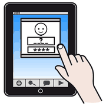
tablet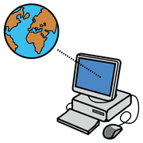
internet comunicare
comunicareTIC sta per Tecnologie dell'Informazione e della Comunicazione (in inglese ICT): l'insieme delle tecniche e dei metodi per trasmettere, ricevere ed elaborare dati e informazioni.
Anche quando non nascono per la didattica, diventano supporto all'apprendimento nel momento in cui l'insegnante le inserisce in un progetto educativo.
La lezione digitale
 guardare
guardare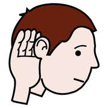
ascoltare scrivere
scrivereUna lezione digitale usa la connessione e i software in modo costante, non occasionale. Servono due competenze:
Literacy tecnica
Saper usare dispositivi e programmi.
Media literacy
Saper comunicare con più linguaggi, compreso quello multimediale.
Non basta proiettare qualcosa sulla LIM. L'insegnante verifica gli strumenti davvero disponibili e fa partecipare i ragazzi alla produzione dei contenuti: sono parte attiva del processo.
cittadinanza
digitale
La netiquette
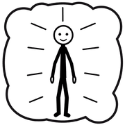
rispetto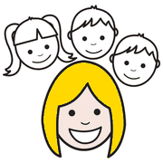
gentile regole
regole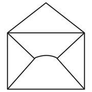
messaggioNetwork (rete) + etiquette (buona educazione): le regole di comportamento che in rete favoriscono il rispetto reciproco. Sono regole informali, che riguardano soprattutto il rapporto con le altre persone.
attenzione!
I rischi da conoscere
 attenzione
attenzione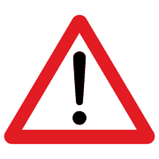
pericolo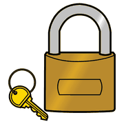
password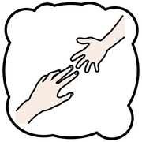
chiedere aiutoDipendenza da internet
Detta anche Internet Addiction Disorder: un uso intensivo e ossessivo della rete in tutte le sue forme, dai social ai video al gioco online.
Cyberbullismo
Il bullismo che passa attraverso strumenti telematici: chat, social, messaggi.
dall'architettura
alla scuola
L'Universal Design
 tutti
tutti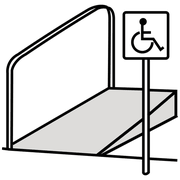
rampa scale
scale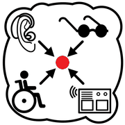
accessibileProgettare spazi, prodotti e servizi che possano essere usati dal maggior numero possibile di persone, qualunque siano età, corporatura e abilità. I sette principi sono stati definiti nel 1997 alla North Carolina State University da un gruppo guidato dall'architetto Ronald Mace.
- Uso equoUtile a persone con abilità diverse.
- Uso flessibileSi adatta a preferenze e abilità individuali.
- Uso semplice e intuitivoSi capisce a prescindere da esperienza, lingua e concentrazione.
- Informazioni percepibiliComunica bene in qualunque ambiente e con qualunque abilità sensoriale.
- Tolleranza dell'erroreRiduce i rischi delle azioni involontarie.
- Poco sforzo fisicoSi usa comodamente, con poca fatica.
- Spazi e dimensioni adeguatiAccessibile qualunque siano corporatura, postura e mobilità.
Portati nella didattica, questi principi diventano l'Universal Design for Learning.